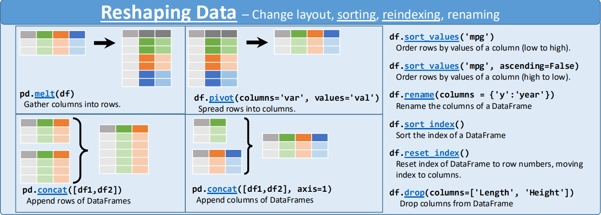

pandas

Learning outcomes
At the end of this sessions, learners …
have practiced using the documentation of favorite HPC cluster
understand what
pandasisunderstand why
pandasis importanthave run Python code that uses
pandas(optional) have read a comma-separated file using
pandas(optional) have saved a table as a comma-separated file using
pandas(optional) have seen the effect of the
indexargument when saving a table(optional) have tried out some of the operation at the the
pandaspage ‘10 minutes to pandas’
For teachers
Repeat:
Q: What is an HPC cluster? A: A group of computers working together to do things one computer would not be able to do
Q: When we are on an HPC cluster, what is the name of the computer we are on? A: The login node
Q: What is a software module? A: Pre-installed software of a specific version
Q: In which two ways can we find out which software module to load? A: search the documentation or search the modules using
module spiderQ: If there is no documentation, how to find out which software module to load? A: search the modules using
module spiderQ: If there is no documentation, and there is no software module, what do we do? A: we install this ourselves
Q: What is
pip? A: The Python package installerQ: How do we behave on the login node? A: We run only light jobs
Q: How do we run heavy calculations? A: We submit a job to the job scheduler
Prior:
What is data wrangling?
What is tidy data?
What is pandas?
From the pandas homepage:
pandas is [an] […] open source data analysis and manipulation tool […]
It allows you to do work with/on data, for example, you can turn this messy data …
Country |
1952 |
1957 |
1962 |
|---|---|---|---|
Albania |
-9 |
-9 |
-9 |
Argentina |
-9 |
-1 |
-1 |
using this pandas code …
table = pd.read_csv("dem_score.csv")
table = table.melt(id_vars = ["country"])
into this tidy data, which is easier to work with:
Country |
Year |
Democracy level |
|---|---|---|
Albania |
1952 |
-9 |
Albania |
1957 |
-9 |
Albania |
1962 |
-9 |
Argentina |
1952 |
-9 |
Argentina |
1957 |
-1 |
Argentina |
1962 |
-1 |
pandas can do many other things, such as reshaping data (from
the pandas cheat sheet):

Why pandas is important
pandas is a popular Python package that allows you
to work with data and it gives you a vocabulary
(and the Python functions) to do so.
How popular is pandas?
pandas is not popular enough to be in
the PyPI top 20.
However, at
the pandas PyPI statistics page
we see that it has more than 600 million downloads per month.
As the number 20 package has around 800 million downloads per month,
we can infer that it is not all too unpopular.
Exercises
Want to see the answers as a video?
HPC cluster |
YouTube video |
|---|---|
Alvis |
|
COSMOS |
|
Dardel |
|
Kebnekaise |
|
Pelle |
|
Tetralith |
Exercise 1: minimal code
Use the documentation of the HPC cluster you work on.
Answer: where is your documentation?
Sorted by HPC cluster:
HPC center |
HPC cluster |
HPC cluster-specific documentation |
|---|---|---|
C3SE |
Alvis |
|
UPPMAX |
Bianca |
|
LUNARC |
COSMOS |
|
PDC |
Dardel |
|
HPC2N |
Kebnekaise |
|
UPPMAX |
Pelle |
|
NSC |
Tetralith |
In that documentation, find the software module to load
the pandas Python package.
Answer: where is the pandas documentation?
HPC cluster |
HPC cluster-specific |
|---|---|
Alvis |
Has no documentation on how to load |
Bianca |
|
COSMOS |
Has no documentation on how to load |
Dardel |
Has no documentation on how to load |
Kebnekaise |
|
Pelle |
|
Tetralith |
In a terminal (on your HPC cluster), load the software module to use pandas.
Answer: how to load the pandas software module
HPC cluster |
How to load the |
|---|---|
Alvis |
|
COSMOS |
|
Dardel |
|
Kebnekaise |
|
Pelle |
|
Tetralith |
|
On your HPC cluster, create a script called pandas_exercise_1.py
with the following code:
import pandas
print(pandas.__version__)
Run the script.
Answer: how to run the script
HPC cluster |
How to run the script |
|---|---|
Alvis |
|
COSMOS |
|
Dardel |
|
Kebnekaise |
|
Pelle |
|
Tetralith |
|
What do you see?
Answer: how does that look like?
The output looks similar to this:
3.0.1
Even though the code shows nothing directly useful, why is this a useful exercise anyways?
Answer
This is a useful exercise,
because it proves that you have successfully loaded/installed
pandas.
(optional) Exercise 2: reading and saving a comma-separated file
In this exercise, we will first read
the ‘diamonds’ dataset (as a comma-separated file):
a dataset about diamonds.
It is described
in the ggplot2 (an R package) documentation.
Download this file to the same folder as where you are running your Python code.
How do I do that?
There are many ways:
Click on the ‘diamonds’ dataset (as a comma-separated file). This will take you to a webpage with the data. Right-click and do ‘Save as’ to save this file to your computer
Download the file from the command-line:
wget https://raw.githubusercontent.com/UPPMAX/HPC-python/refs/heads/main/docs/day3/pandas/diamonds.csv
Your favorite alternative way
On your HPC cluster, create a script called pandas_exercise_2.py
with the following code:
import pandas as pd
table = pd.read_csv("diamonds.csv")
print(table)
Run the script pandas_exercise_2.py.
Answer: how to run the script
HPC cluster |
How to run the script |
|---|---|
Alvis |
|
COSMOS |
|
Dardel |
|
Kebnekaise |
|
Pelle |
|
Tetralith |
|
What does the script pandas_exercise_2.py do?
Answer
It reads a comma-separated file into memory.
Next step is to save it. Add the following code to pandas_exercise_2.py:
table.to_csv("pandas_exercise_2.csv")
Again, run the script pandas_exercise_2.py.
Answer: how to run the script
HPC cluster |
How to run the script |
|---|---|
Alvis |
|
COSMOS |
|
Dardel |
|
Kebnekaise |
|
Pelle |
|
Tetralith |
|
Take a look at the file pandas_exercise_2.csv.
What has been added to the data?
Answer
Of each row in the data, there has been an index added:
,carat,cut,color,clarity,depth,table,price,x,y,z
0,0.23,Ideal,E,SI2,61.5,55.0,326,3.95,3.98,2.43
1,0.21,Premium,E,SI1,59.8,61.0,326,3.89,3.84,2.31
2,0.23,Good,E,VS1,56.9,65.0,327,4.05,4.07,2.31
3,0.29,Premium,I,VS2,62.4,58.0,334,4.2,4.23,2.63
4,0.31,Good,J,SI2,63.3,58.0,335,4.34,4.35,2.75
In pandas_exercise_2.py, replace the last line by this version:
table.to_csv("pandas_exercise_2.csv", index = False)
Run pandas_exercise_2.py. How does the data look like now?
Answer
Now, the file looks like shown below, where there is no indexing anymore.
carat,cut,color,clarity,depth,table,price,x,y,z
0.23,Ideal,E,SI2,61.5,55.0,326,3.95,3.98,2.43
0.21,Premium,E,SI1,59.8,61.0,326,3.89,3.84,2.31
0.23,Good,E,VS1,56.9,65.0,327,4.05,4.07,2.31
0.29,Premium,I,VS2,62.4,58.0,334,4.2,4.23,2.63
0.31,Good,J,SI2,63.3,58.0,335,4.34,4.35,2.75
What seems to be the most useful way to save: with or without indexing?
Answer
Typically, you will want to save without indexing.
Why would pandas supply this option, to save with/without indexing?
Answer
For backwards compatibility.
Indexing was a useful feature in the field
pandas was initially developed in,
so pandas always used indexing, with no way to disable this feature.
However, later it was found that indexing is not useful in other fields.
There were two options:
Remove indexing from
pandasAllow users to disable indexing
Removing indexing would cause old code to break, so this was decided against. Instead, it was decided to allow users to disable indexing when needed.
(optional) Exercise 3: tidy data
pandas shines when the data is tidy.
Search the web for ‘What is tidy data?’. Is the diamonds dataset tidy? Why?
Answer
I found the definition below from
a tidyr (an R package) article:
In tidy data:
Each variable is a column; each column is a variable.
Each observation is a row; each row is an observation.
Each value is a cell; each cell is a single value.
The diamonds dataset is tidy, because:
Each feature of each single diamond has a column. Each feature is observed at more-or-less the same time
Each diamond has its own row
Each value in the table is indeed one value
Now take a look at a dataset from this book
called dem_score.csv.
This dataset shows the ratings of the level of democracy in
different countries spanning 1952 to 1992, where the minimum value of -10
corresponds to a highly autocratic nation whereas a value of 10 corresponds
to a highly democratic nation. Here is how it looks like:
country,1952,1957,1962,1967,1972,1977,1982,1987,1992
Albania,-9,-9,-9,-9,-9,-9,-9,-9,5
Argentina,-9,-1,-1,-9,-9,-9,-8,8,7
Armenia,-9,-7,-7,-7,-7,-7,-7,-7,7
Australia,10,10,10,10,10,10,10,10,10
Is the dem_score dataset tidy? Why?
Answer
I found the definition below from
a tidyr (an R package) article:
In tidy data:
Each variable is a column; each column is a variable.
Each observation is a row; each row is an observation.
Each value is a cell; each cell is a single value.
The dem_score.csv
dataset is not tidy, because:
For all expect the first column, these columns are values: they are values for the year the measurement was done.
Each row contains multiple observations: per country, it shows the democratic index of 1952, the democratic index of 1953, etc.
Each value in the table is indeed one value
How would this data look like, would it be tidy?
Answer
Here is how this data would look like, would it be tidy:
country,year,democracy_level
Albania,1952,-9
Albania,1953,-9
Albania,1954,-9
Albania,1955,-9
Create a Python script called pandas_exercise_3.py.
In that script, use pandas to read
the dem_score.csv dataset,
convert it to tidy data
and save it as tidy_dem_scores.csv.
For this use:
the
pandascheat sheet. Tip: the function you will need is this one.Your favorite web search engine
Your favorite AI
Answer
Here is the minimal code to do so:
import pandas as pd
table = pd.read_csv("dem_score.csv")
table = table.melt(id_vars = ["country"])
table.rename(columns = {"variable": "year", "value": "democratic_score"}, inplace = True)
table.to_csv("tidy_dem_scores.csv", index = False)
(optional) Exercise 4: what does pandas mean?
The word pandas is actually a shortened version of something.
Search the internet for what it stands for.
In which field did pandas originate?
Answer
pandas is short for ‘panel data’.
Panel data is a type of data set used in econometrics.
Econometrics is the field where pandas originated.